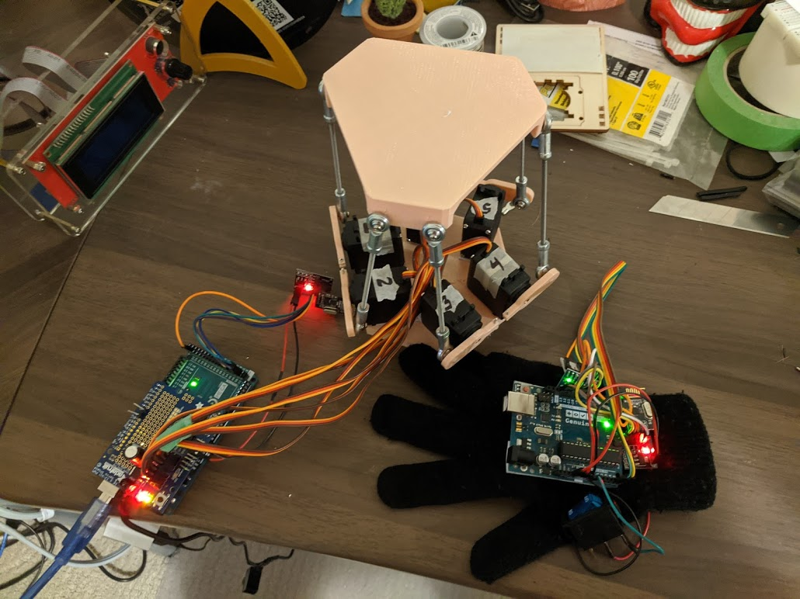
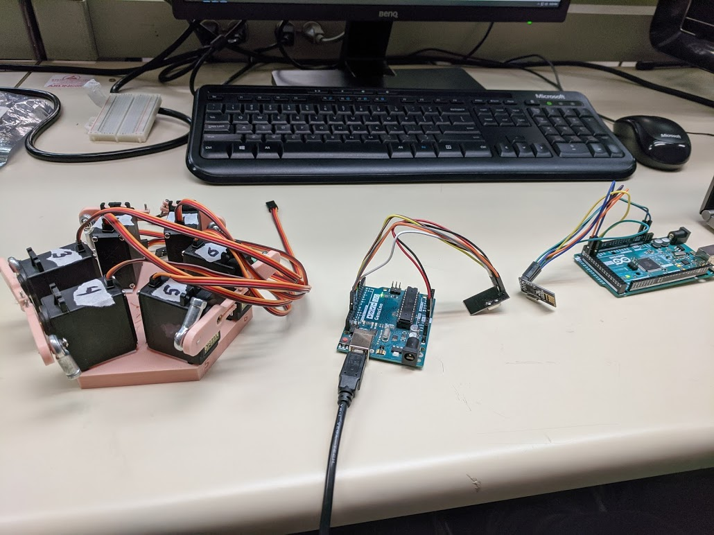
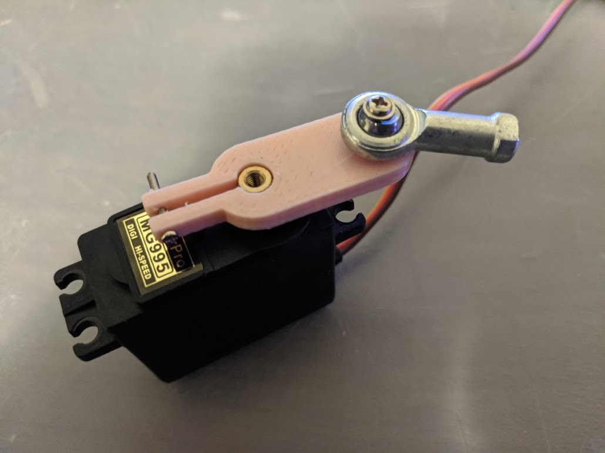

A Stewart Platform is essentially a platform that can move in 6 degrees of freedom in XYZ, Yaw, Pitch, and Roll. Common applications for such devices can be found in any scenario where orientation and balance are important, such as stabilization modules for cameras.
The platform was constructed as part of the ME380 course. The platform is controled by 6 servo motors attached via ball joints in order to actuate platform motion. A rigorous set of inverse kinematics was completed in order to convert some input (XYZYPR) and convert that value to an output servo angle. When all 6 servo motors work in conjunction, the system can be viewed as 6 4-bar linkage systems.
This specific platform features a remote input method by using a MPU-6050 accelerometer/gyroscope module and nRF24L01 RF Transiever which converts the users hand position into integar values. These values are then sent wirelessly to the platform where the control block converts the input to the servo angles. As an added challenge, the platform had to be able to solve a pre-determined maze by moving a marble from start to finish.
Firstly, the inverse kinematics were completed using variables only. Once simplified, assumptions were made to determine the sizes for the base, servo arm, and other fixed values. This was then modelled in CAD software and tolerance, force, and collision analysis were completed to ensure proprt fit/function of the design.
Afterwards, the electronc components were then selected and configured. Two Arduino units were used, one as the sender and on as the reciever. Code was written to communicate the input values between these devices and after thorough prototyping, the final design was created (as shown on the right). The primary goal for this design was to allow users who may have limited motor function to still use this device while providing an intuitive and fun control method. This design could also be used as a potential therapy activity where the user can visually see progress of their hand/wrist giving them motivation and encouragement to continue progress.


